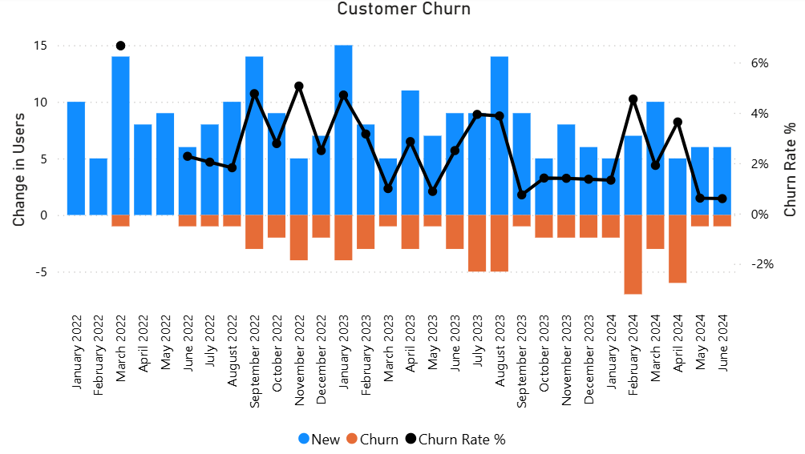

Customer Churn Rate (%)
Description
Customer Churn Rate represents the percentage of customers who stop using a product or service within a given time period. It is a critical KPI for subscription-based businesses, helping identify retention issues and evaluate the impact of customer success initiatives.
Visual Example

DAX Formulas
Usage Notes
- Churned Customers are those who were active in the previous period but are no longer active in the current period.
- Customers at Start of Period typically refers to customers active in the previous full period (e.g., start of the month).
- Use a disconnected Date table to calculate churn month-over-month with proper filtering.
- Pair churn rate with retention rate (1 - churn) and cohort analysis for deeper insights.